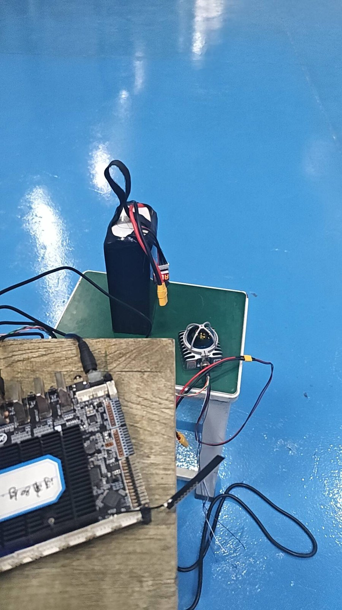
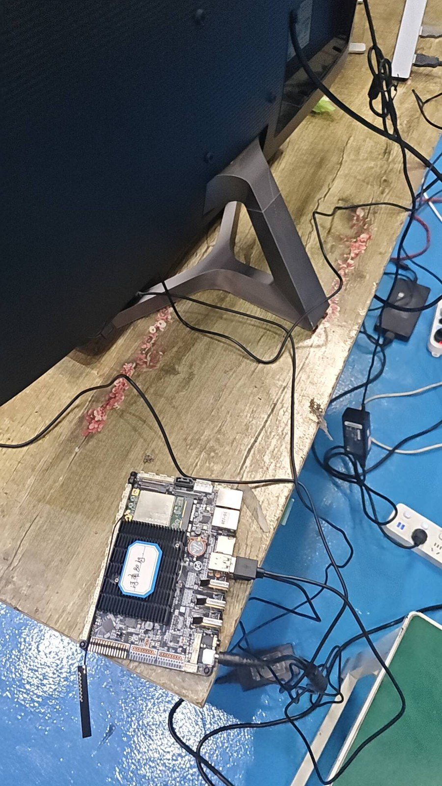

上一周结束的时候，RViz 里能看见点云了。但「能看见」和「能拿来做事」之间还差一层： 下一次开机，点云就不一样了。挪一次桌子、换一个角度、雷达转半圈， 屏幕上那团东西全变——这意味着任何调参结论都没法复现。 这一周的全部工作，就是把这个「现场」冻成一份文件。
一、为什么先录包，而不是先跑算法
按顺序本来应该先编译 FAST-LIO、先跑第一次建图。我把它反过来了，先花一天录包，原因很实际：
- 真机一轮太慢。 插电、连网、起驱动、摆雷达、走一圈，一轮下来十几分钟， 中间任何一个参数改了都要重来。一天最多跑七八轮。
- 算法调参要的是「同一份数据，不同的参数」。 只有把输入固定住，才能判断「这次效果好」是因为参数对了， 还是因为这次走得比较稳。
- 出问题的时候，现场已经没了。 建图漂了，你想回去看看到底哪一段开始歪的——如果没录包，只能重新走一遍， 而重新走的那一遍不会复现同一个错误。
但录包这件事有个陷阱，我一开始没意识到：录坏的包比不录更浪费时间。
因为它不会报错。文件生成了、大小正常、bag info 也列得出话题，
等你在算法那边折腾两小时、怀疑了三个参数之后，才会发现包里根本没有 IMU。
二、先把上一篇漏掉的东西补上：/livox/imu
上一篇的结尾我写了一句：RK3588 那屏 topic list 里只有 /livox/lidar，
当时觉得「点云能看就行」。这个判断在那一周是成立的——RViz 只要点云，
IMU 有没有都不影响画面。但它不成立在下一周。
FAST-LIO 是激光-惯性紧耦合：雷达负责几何，IMU 负责在两次扫描之间推算运动。 没有 IMU 不是「精度差一点」，是根本跑不起来—— 它没法给出两帧之间的位姿初值，点云也就配不准。
先确认它在不在、是什么类型、有没有频率：
ros2 topic list | grep livox ros2 topic info /livox/imu ros2 topic info /livox/lidar ros2 topic hz /livox/imu ros2 topic hz /livox/lidar
正确的组合是这两个，缺一不可：
| 话题 | 类型 | 期望频率 | 类型不对说明什么 |
|---|---|---|---|
/livox/lidar |
livox_ros_driver2/msg/CustomMsg |
约 10 Hz | 如果是 sensor_msgs/msg/PointCloud2，说明 launch 用错了（见上一篇第六节） |
/livox/imu |
sensor_msgs/msg/Imu |
约 200 Hz | 如果根本没有这个话题，多半是驱动的 publish_freq 或 IMU 相关开关没开 |
这里有个容易误判的地方：ros2 topic list 里有 /livox/imu，
不等于它在发数据。话题是节点启动时就注册好的，
哪怕一帧都没发出去，名字也会挂在那儿。topic hz 才是真的在数。
我第一次就是被这个话题名骗了几分钟。
三、四道体检：list / info / hz / bw
这四条命令分别回答四个不同的问题，不能互相替代。按顺序走一遍， 数据链路上任何一层断了都能单独定位：
| 命令 | 回答的问题 | 不正常时的含义 |
|---|---|---|
ros2 topic list |
节点有没有把话题注册出来 | 驱动没起来，或者 source 的环境不对 |
ros2 topic info <topic> |
类型对不对、有几个发布者 | Publisher count 为 0 = 只有订阅没有发布，名字在但是空的 |
ros2 topic hz <topic> |
实际频率是多少 | 显示 0 或不输出 = 数据没在流动；忽高忽低 = 带宽或算力紧张 |
ros2 topic bw <topic> |
每秒吃多少字节 | 用来算 bag 会有多大、磁盘够不够、SD 卡写不写得动 |
第四条是我这次新加的习惯，也是最容易被跳过的一条。录包之前先量一次带宽：
ros2 topic bw /livox/lidar ros2 topic bw /livox/imu
两个数加起来乘 60，就是一分钟 bag 的大致体积；再乘你打算走多久， 就知道这块盘够不够。这件事必须在按 record 之前做—— 录到一半磁盘满了，rosbag 不会优雅地停下来告诉你「我只存了一半」， 它会给你一个看起来完整、实际缺尾的文件。
df -h 看一眼，再决定走多久。
板子上的存储通常是 eMMC 或者一张 SD 卡，可用空间远小于你笔记本的直觉。
我现在的做法是每次录之前把上一次的包先挪走或删掉，
保证板子上永远留着一份完整 bag 的空间余量，而不是等它报错。
四、record 到底该录哪几个话题
ros2 bag record 有两种写法，差别比看起来大：
# 写法 A：录所有话题 ros2 bag record -a # 写法 B：只录指定的 ros2 bag record /livox/lidar /livox/imu
-a 看起来省事，实际会额外录进 /rosout、/parameter_events、
/tf、/clock 这一堆东西。它们单个都不大，但有两个副作用：
-
回放时会有别人在说话。
如果你回放的时候还开着别的节点，
/tf和/clock会和当前系统里的打架，出现一些很难解释的现象。 -
排障时会看到假线索。
bag 里有一堆话题，
bag info一屏刷不完， 反而看不出「我到底该关心哪两个」。
所以我的写法 B 是显式列出这两个。第三个可选的是 /tf——
如果你在建图时手动发布过静态 TF，把它一起录下来，回放时才完整。
另外两个细节，写在这里省得以后忘：
mkdir -p ~/bags cd ~/bags # 指定输出目录名，默认是 rosbag2_2026_11_09-10_33_00 这种时间戳 ros2 bag record -o walk01 /livox/lidar /livox/imu
一是一定要先 cd 到一个你找得到的地方。
ROS 2 Humble 的 bag 默认格式是 sqlite3，落地成 .db3 文件加一个 metadata.yaml，
整个是一个目录。它不会问你要存哪，就存在当前目录下。
二是停止要用 Ctrl-C，然后等它自己退出来。
rosbag 在退出时才把 metadata.yaml 写完，
如果你直接关终端、或者 Ctrl-C 之后立刻再按一次，
文件可能是完整的 .db3 但没有元数据——这种包 bag info 会报错，
而 .db3 本身却打得开，很容易误判成「包是好的，是工具坏了」。
五、录制时的动作规范：这几条不是讲究，是算法要求
这一部分是我这周栽得最实的一次。第一次录的时候我想「不就是走一圈」， 从桌上拿起雷达就走，结果包拿回去跑出来一团糊。
原因不在包，在走路的方式。FAST-LIO 这类算法对输入运动有几个隐含前提， 违反了不会报错，只会让结果慢慢歪掉：
| 动作 | 为什么必须这样 | 违反之后的现象 |
|---|---|---|
| 开头静止 3–5 秒 | IMU 要在这个静止段里估零偏（陀螺仪的零点漂移） | 整段地图从一开始就是斜的，越走越歪 |
| 慢速平移，别甩 | 两帧之间的位移要靠 IMU 积分推，角速度太大误差就爆 | 转弯处点云重影、墙变成两层 |
| 走闭合回路，回到起点 | 闭合是唯一能靠肉眼判断「累积误差有多大」的方式 | 看不出漂移量，以为建图是准的 |
| 有结构的环境 | 算法靠墙面、柱子、地面这些平面做约束 | 空旷场地或长直走廊里，位置会沿走廊方向漂 |
| 避开玻璃和大面积反光 | 玻璃要么穿透要么乱反射，点会飞到不存在的地方 | 地图里出现一串悬空的点，或者凭空多出一面墙 |
前两条是只要照做就有效的，后三条是环境限制， 有时候没得选——那就至少知道自己拿到的数据里带着什么缺陷。
为了让雷达能真正离开桌子走起来，这周把供电改成了电池直供：

顺手记一下这块板子的接线，因为它决定了录制时能跑多久：

六、录完必做：拿 bag info 对一遍
录完不要急着去跑算法，先看这个：
ros2 bag info ~/bags/walk01
输出里我最关心四行，逐一对照：
| 看哪一行 | 正常应该是什么 | 不对说明什么 |
|---|---|---|
Duration |
和你实际走的时长接近 | 明显短 = 中途停了，或者磁盘写不动 |
Bag size |
和你用 topic bw 估的量级一致 |
远小于估算 = 后半段丢数据了 |
Messages |
点云条数 ≈ 时长 × 10，IMU 条数 ≈ 时长 × 200 | IMU 条数是 0 或远低于预期 = 这包废了，别浪费时间往下跑 |
| Topic 列表 | 只有你指定的那几个 | 多出一堆 = 用了 -a，或者环境里有别的节点在发 |
第三条是最值得算的。点云和 IMU 的条数比例应该稳定在 1:20 左右 （10 Hz 对 200 Hz）。如果这个比例明显偏了，说明有话题在中途掉帧—— 这种情况在地图上是看不出来的，只会在算法里表现成「某一段突然变糊」， 而你会去怀疑参数。
七、这一周踩到的四个坑
| # | 现象 | 当时的判断 | 实际原因 | 怎么确认 |
|---|---|---|---|---|
| 1 | topic list 里有 /livox/imu，但算法说没数据 |
话题存在就是有数据 | 话题被注册了，但没有发布者在发 | topic info 看 Publisher count；topic hz 看实际频率 |
| 2 | 录完的包 bag info 报错 |
rosbag 有 bug | Ctrl-C 之后又按了一次，metadata.yaml 没写完 |
目录里看有没有 metadata.yaml；只按一次 Ctrl-C 并等它退出 |
| 3 | 走去别处找包，找不到 | 录失败了 | 没 cd，包落在当时的当前目录 |
录之前 pwd 一下，或用 -o 指定绝对路径 |
| 4 | 录到一半自动结束 | 驱动崩了 | 磁盘满，rosbag 写不进去 | df -h；录之前清掉旧包 |
这四个坑有个共同特征，和上一篇那六个一模一样：系统都不报错。 第 1 条会一路走到算法里才暴露，第 2 条会让你以为工具坏了， 第 3 条让你以为录制失败，第 4 条给你一个缺尾但看起来完整的文件。
所以这一周最大的收获其实不是「会录包了」，而是把上一篇那个习惯又往前推了一步： 上一篇问的是「数据到了哪一层」， 这一周问的是「数据到齐了没有、够不够用」。 前者解决「有没有」，后者解决「能不能用」。
八、下一步
包有了，接下来才是真正要看的：把这份固定的输入喂给 FAST-LIO， 看它能把这一圈走成什么形状。那部分单独写了一篇—— 因为第一次建图的过程里有三个时刻值得单独记下来（274 秒、286 秒、301 秒）， 它恰好说明了「点云在长」这件事到底是什么样子。
另外还有两件这周想做但压住没做的：
-
没有校准时间同步。
现在
time_sync_en是关的，靠的是雷达内部已经把点云和 IMU 打过时间戳。 要真正上机、要跑长距离，这一步迟早要做，但不是在第一次建图之前。 - 没有做外参标定。 还是用配置里默认的雷达-IMU 相对位姿。现在雷达和板子是「摆在桌上」的关系， 量出来的外参没有意义——等装到机身上再算。
这两件事都属于「知道它重要，但现在做是白做」。判断依据和上一篇一样： 物理安装还没定，任何依赖安装关系的参数都是暂时的。